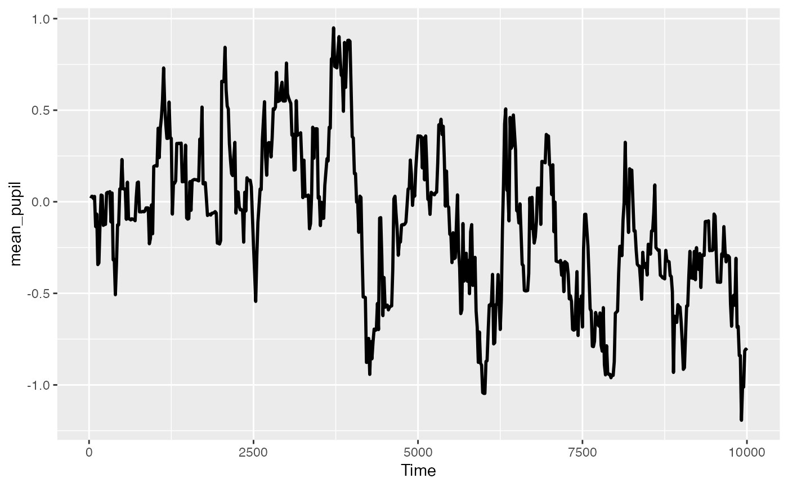

R/functional_data.R
create_difference_data.RdThe difference data frame is used when creating a dataframe to do the functional t-test analysis. This function would be the first step in that analysis, after doing the pre-processing. It creates a frame where it treats the condition data as level2 - level1. It will throw an error if there are more than two conditions.
create_difference_data(data, pupil)
| data | a PupillometryR dataframe |
|---|---|
| pupil | column name for pupil data |
A Pupil_difference_data data frame
Sdata <- make_pupillometryr_data(data = pupil_data, subject = ID, trial = Trial, time = Time, condition = Type) mean_data <- calculate_mean_pupil_size(data = Sdata, pupil1 = RPupil, pupil2 = LPupil) base_data <- baseline_data(data = mean_data, pupil = mean_pupil, start = 0, stop = 100) differences <- create_difference_data(data = base_data, pupil = mean_pupil)#>